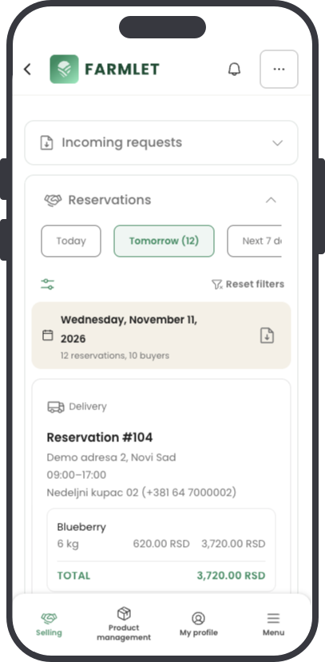
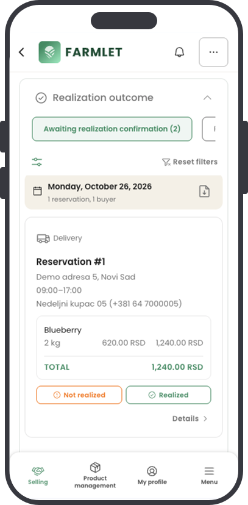

Reservation Management
→
→
→
A Request-Based Reservation System
The reservation process was one of the most challenging parts of the project. Instead of a traditional shopping cart and checkout, Farmlet allows buyers to send reservation requests directly to sellers. I designed the flow to help sellers review incoming requests, check reservation details and accept or reject them, while buyers can follow the status of their requests.
Buyer
Sends reservation request
Seller
Reviews the request
Seller
Accepts or rejects
Buyer
Follows request status


